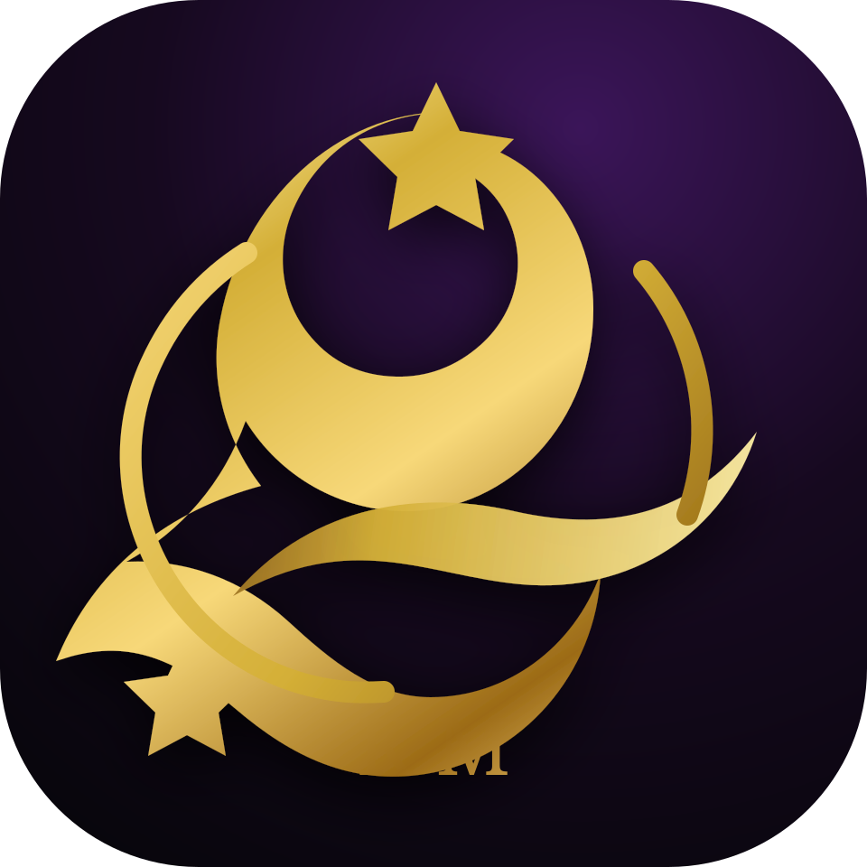

9:41
● ● ●

KIZ MEMORY
Dance. Remember. Forever.
Vos soirées deviennent des souvenirs prêts à partager.
Filmez ou importez une vidéo. Kiz Memory prépare un récap vertical simple, élégant et social.
Dernières Memories
Nouvelle Memory
Comment souhaitez-vous créer votre Memory ?
Choisissez une entrée. Le reste se fera étape par étape.
Capture
Caméra prête
Autorisez la caméra
Le logo disparaît dès que la caméra est active.
00:00
Importer
Importation locale pour le prototype. Aucun vrai serveur IA n’est connecté dans cette V3.
Analyse
Analyse en cours…
On détecte les meilleurs moments et on prépare votre montage vertical.
0%
- 1Analyse vidéo
- 2Détection des temps forts
- 3Préparation du montage
Format
✨
12 temps forts détectés
Format conseillé : Reel 30s vertical 9:16
Choisissez une durée
Votre Memory est en création
Montage automatique…
Memory prête
KIZOMBA NIGHT
Reel vertical · 30s
Confidentialité
🛡
Vos souvenirs restent sous contrôle.
Avant de partager, validez toujours la vidéo finale. Le floutage automatique et la modération sont prévus pour une future version connectée.